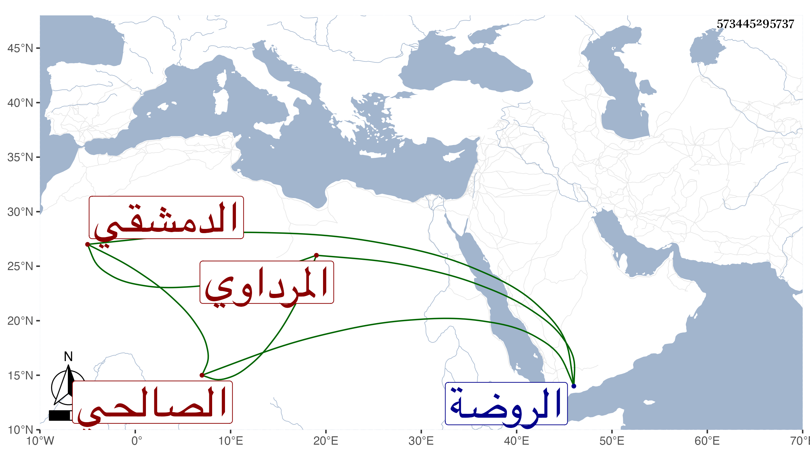

0902Sakhawi.DawLamic.ITO20230111-ara1.EIS1600.573445295737
Biography ID: 573445295737
934
محمد بن إبراهيم بن محمد الشمس المرداوي ثم الصالحي الدمشقي نزيل الجامع المظفري . ولد سنة إحدى أو اثنتين وثمانين وسبعمائة وسمع المحب الصامت وأحمد بن إبراهيم بن يونس وموسى بن عبد الله المرداوي وعبد الله بن خليل الحرستاني وآخرين وحدث سمع منه الفضلاء كابن فهد وكان يخالط الأكابر . مات في جمادى الآخرة سنة خمسين ودفن بأعلى الروضة من سفح قاسيون رحمه الله .
